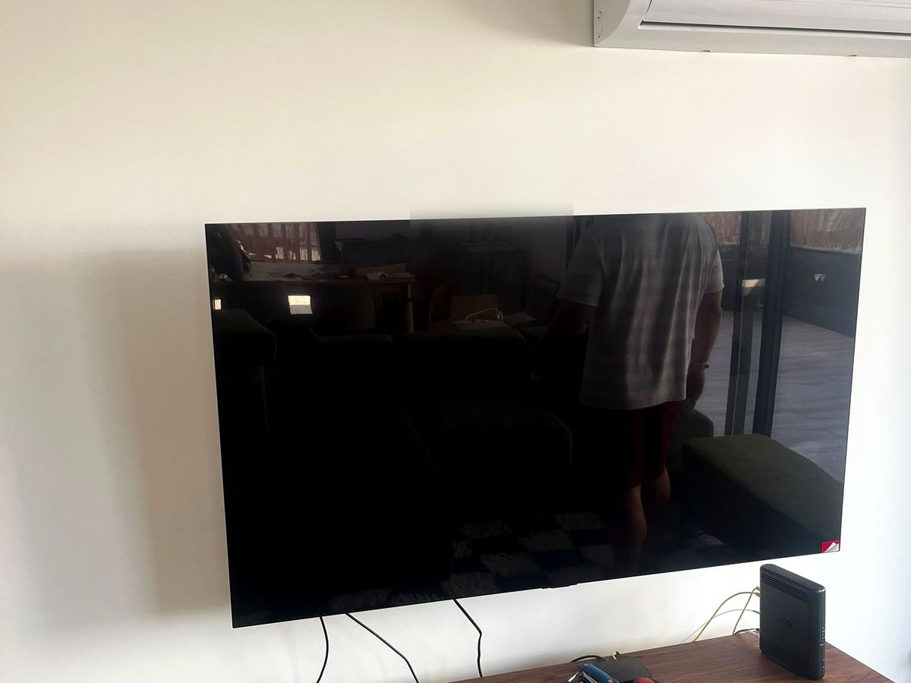
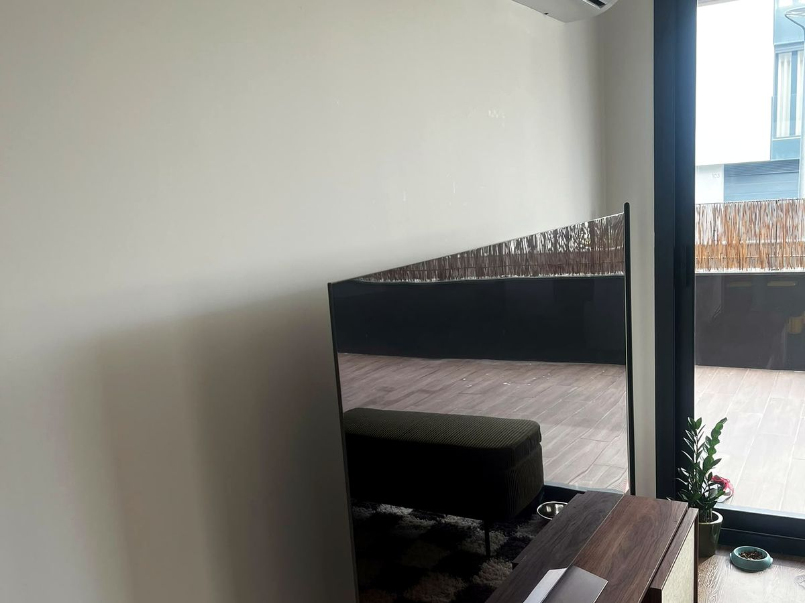
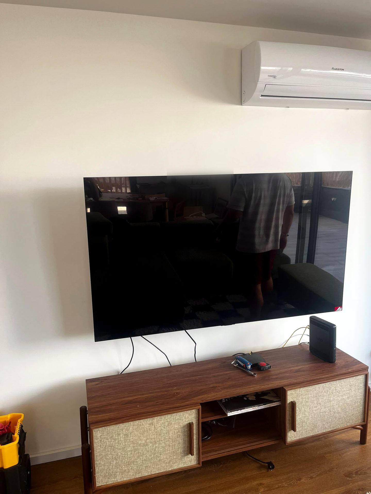

Televisão na parede, com os cabos escondidos
A televisão estava em cima do móvel e passou para a parede, com os cabos escondidos.

O desafio
Televisão grande em cima do aparador, com os cabos à vista.
A nossa solução
Montámos a televisão num suporte fixo na parede e escondemos os cabos.
O resultado
Televisão alinhada na parede e o aparador livre.
Destaques
- Suporte fixo na parede
- Cabos escondidos
- Aparador livre
Antes & depois


★★★★★“Trocou todos os cabos antigos por cabo de rede para todas as divisões. Educado, transparente e rápido.”
— Eduardo D. · Telecomunicações
→